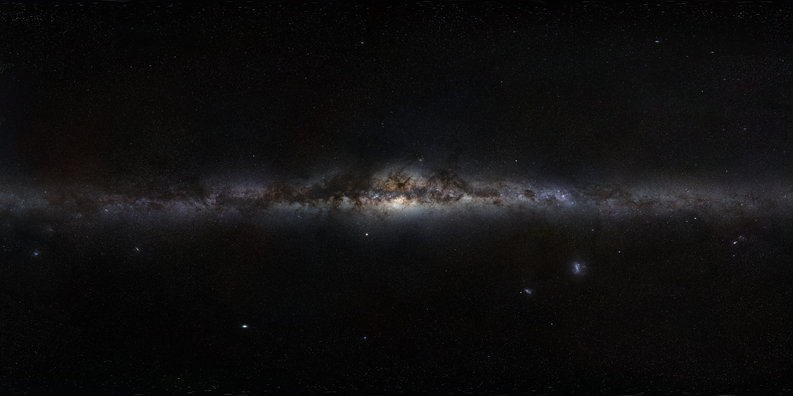

Planeta Terra
Nosso planeta visto do espaço, conhecido por seus oceanos, continentes e atmosfera.
Imagens do espaço
Explore imagens reais e representações dos principais objetos encontrados no Universo.
Nossa galeria apresenta planetas, luas, galáxias, nebulosas e outros fenômenos espaciais.
Nosso planeta visto do espaço, conhecido por seus oceanos, continentes e atmosfera.

O satélite natural da Terra apresenta uma superfície marcada por crateras.

Conhecido como planeta vermelho, Marte é um dos principais alvos da exploração espacial.

O maior planeta do Sistema Solar possui grandes tempestades e dezenas de luas.

Uma grande região de formação de estrelas localizada na constelação de Órion.

A galáxia onde está localizado o Sistema Solar e bilhões de outras estrelas.
Novidades espaciais
Conheça alguns dos principais assuntos estudados pela astronomia moderna.
Robôs e sondas espaciais estudam o solo, a atmosfera e a história do planeta vermelho.
Saiba maisTelescópios modernos registram imagens de regiões cada vez mais distantes do Universo.
Saiba maisCientistas continuam identificando planetas que orbitam estrelas fora do Sistema Solar.
Saiba maisEnvie sua dúvida, sugestão ou curiosidade por nossa página de contato.
Ir para contato